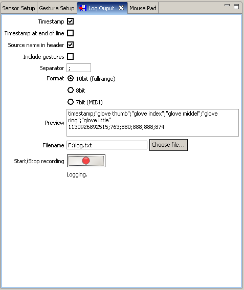

Log Output
I. Description
In the Log Output view you define the form, path and name of the stored log output file.
Enter a filename in the textfield or choose one via the filedialog by clicking on the
"Choose file..." button.
When you have chosen a file, you can press the record button to start.
The written format is CSV compatible.
II. Options
-
Timestamp:
Write a timpstamp in every line
-
Timestamp at end of line:
If "Timestamp" is activated the timestamp will written at the end of every line
-
Source name in header:
Display the name of the source in header. If this option is not activated a auto
given name will displayed
-
Include gestures:
Display active gestures or not
-
Seperator:
Type the separator which is displayed between every value, name and timestamp
-
Format:
Value format which is written.
10 Bit: Original sensor value
8 Bit: Calibrated values 0..255
7 Bit: Calibrated MIDI values 0..127
-
Preview
A short preview of the header and one line of the written log output is showed
for demonstration
-
Filename
Type a name for the written file. Necessary to create a log output file
-
Start/Stop File
Toogle Button to start and stop the loggin. You must choos a file before the logging
can start

Image: Log Outout Example